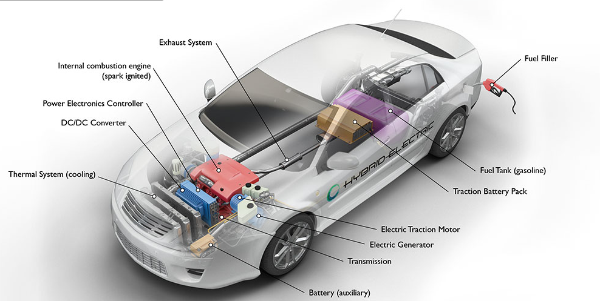
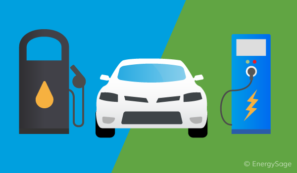

Bevezetés
A hibrid autók olyan járművek, amelyek belső égésű motort és elektromos motort is használnak a meghajtáshoz. Ez a kombináció jobb üzemanyag-hatékonyságot és alacsonyabb kibocsátást tesz lehetővé a hagyományos benzinüzemű autókhoz képest.
A hibrid autók története az 1990-es évek elejére nyúlik vissza, amikor az első modern hibrid autók megjelentek a piacon. Azóta a technológia folyamatosan fejlődött, és ma már számos gyártó kínál különböző hibrid modelleket.

A hibrid autók népszerűsége az elmúlt években jelentősen megnőtt, köszönhetően a környezetbarát technológiáknak és az üzemanyag-hatékonyságnak. A hibrid autók különösen népszerűek a városi közlekedésben, ahol a gyakori megállások és indulások miatt az elektromos motor hatékonyan tudja csökkenteni az üzemanyag-fogyasztást.
A hibrid autók jövője ígéretes, mivel egyre több gyártó fejleszt új modelleket és technológiákat. Az elektromos járművek iránti növekvő kereslet és a szigorúbb kibocsátási előírások miatt a hibrid autók fontos szerepet játszanak a fenntartható közlekedésben.